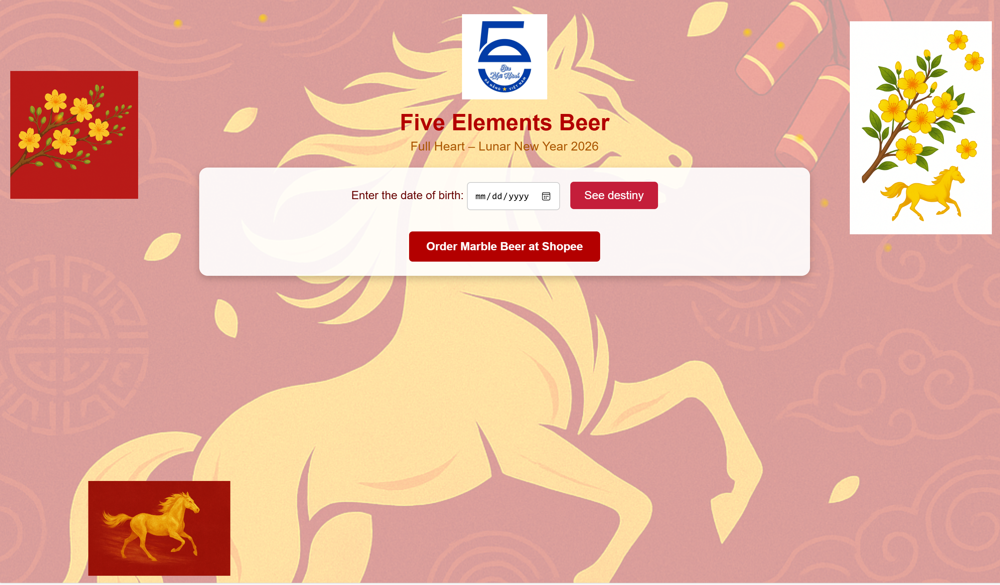

My Projects
Google Cloud Computing Foundations
In the Google Cloud Computing Foundations course, I learned the fundamental concepts of cloud computing, including the differences between IaaS, PaaS, and SaaS. The course provided a comprehensive overview of Google Cloud's global infrastructure, such as Regions and Zones. The key focus was on identifying the purpose and business value of core services, including Compute Engine, Cloud Storage, Virtual Private Cloud (VPC), and Cloud IAM for security.
AI Career Consulting System
My project was an AI Career Consulting System helps Informatics students make informed career decisions. The system's core feature uses an AI model to analyze a user's profile, including their skills and interests. Based on this analysis, it provides personalized recommendations for suitable job roles, identifies skill gaps, and suggests relevant learning paths to help them achieve their goals.
The Five Elements Stele
'Bia Ngũ Hành' (The Five Elements Stele), is an interactive web application that provides users with a 'destiny prediction.' Users input their date of birth, and the system processes this information through a custom algorithm. It then displays a personalized analysis, such as personality traits or a fortune, based on the principles of 'Ngũ Hành' (The Five Elements) associated with their birth date.Link
